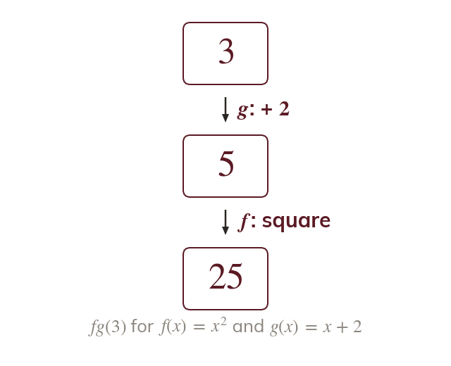
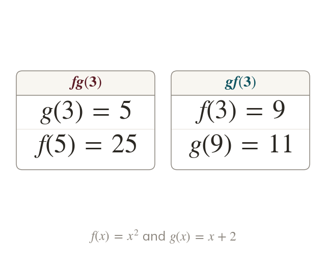
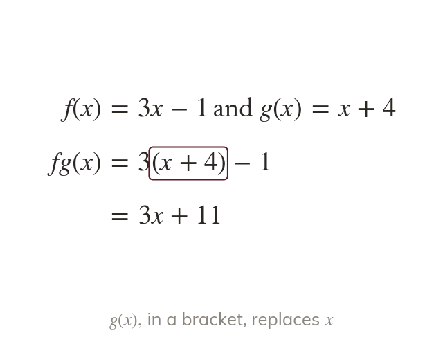
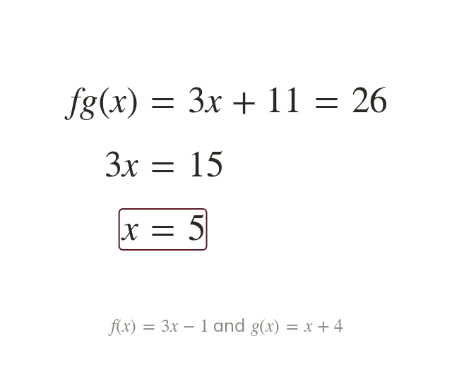

The inside acts first
In g acts first and f acts on its output. The function written next to x is used first.
A shop takes off, then a voucher takes off. That is two functions, one after the other, and the order changes the price. Today we combine functions and see why the order matters.
Work down the page at your own pace. Write every answer in your book first, then click to check it.
Read each card, then follow the worked examples one step at a time.

In g acts first and f acts on its output. The function written next to x is used first.

Swapping the order usually changes the result. So and are different.
Pick an answer. If it's wrong, the feedback tells you which mistake it was.
Read each card, then follow the worked examples one step at a time.

To form all of replaces in f. Writing it in a bracket makes it reach every term.

An equation like is in x. The composite is formed first, then the equation is solved.
Pick an answer. If it's wrong, the feedback tells you which mistake it was.
Finished? Next lesson: 11H.9.6 Finding Inverse Functions.
For each skill, tap the one that is true for you today. Your Revise pages start with anything you mark Not yet.
Your ratings are saved on this device only.
Log in, then search for a code to practise that skill.
Videos, worksheets and more on each part of this lesson.